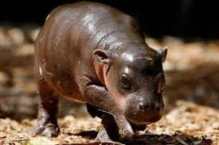
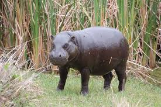
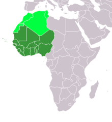

History
The pygmy hippo has been fascinating humans since ancient Egypt. In fact, there have even been many folktales. The most popular folktale explain that pygmy hippos carry diamonds in their mouths, which lights their path. Before the hippo sleeps, it hides the diamond where it cannot be found. If one wants to catch a pygmy hippo, they must find the diamond. Then, they can have not only the hippo, but the diamond as well. However, they must catch the hippo at night.
So, What is It?
The pygmy hippo are herbivores, similar to their relatives, the hippopotamus. Unlike the hippopotamus, however, pygmy hippos eat grass, fruits, and leaves from trees and other plants. These are all extremely accesible because of their location. Pygmy hippos live in the humid swaps and forests of West Africa. Because of their seclusion, the pygmy hippo is a solitary animal. The pygmy hippo is nocturnal, and pairing this with their seclusive nature, there are very few predators to the pygmy hippo. Leopards are their main predator, but pythons and crocodiles also also can attack and eat the hippos.
  
Conservation Efforts
While pygmy hippos may have very few natural predators, the human race is slowly destroying the species. Through hunting the species for their teeth and their meat and destroying their habitats, humans have severely damaged the pygmy hippos chances of survival. The species was last recorded to have 3,000 left, but it is assumed that the number has since dropped. Several conservation efforts have been started, such as the Pygmy Hippo Foundation, which has since partnered with other organizations such as the Zoological Society of London (ZSL) and the EDGE of Existence organization to save the hippos. Many laws have been put in place to prevent hunting and deforestation, but very few are actively enforced.